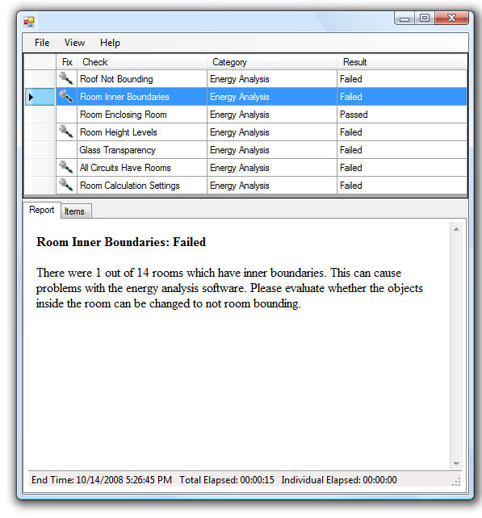

Model Review
We recently mentioned the subscription pack for Revit 2010. In addition to the product update itself, the subscription page for Autodesk Revit Architecture 2010 includes some new applications to complement Revit workflows to:
- Validate the accuracy of building information models against pre-determined standards.
- Import and export data between a Revit project and an external database.
- Facilitate the creation of 3D models from 2D digital photographs.
These areas are obviously of great interest for developers as well. The first of these points is addressed by the model review plug-in, which includes a small API for developers or customers to hook into to specify their own rules and standards to be checked. Matt Mason of Avatech Solutions, who is one of the original Model Review developers, now kindly wrote a summary of its functionality:
Introduction
Autodesk Revit� Model Review is a new add-in product available to Autodesk subscription customers via the Revit 2010 Subscription Advantage Pack. Model Review provides the capability to configure and run checks against Revit projects or families and provide a report of whether the checks have passed or failed. Model Review provides 35 different kinds of checks, within the areas of:
- Modelling for Energy Analysis
- Revit Family consistency and standards
- Firm or Project-based Revit Standards
- GSA Spatial Program Validation
Here is a sample screen snapshot:

The Checking Platform
Model Review is not just a configurable set of checks provided by Autodesk – it is also a platform for developers to write their own checks and plug them in to the checking process. This could be desirable if BIM administrators want to check for issues which are not possible to check with the "out-of-the-box" Model Review checks, either because the check has not yet been implemented, or because it is too specialized to ever exist in the base product.
Creating a plug-in enables a developer who understands the Revit API to write a simple extension which leverages the Model Review platform for configuring, running, and reporting check results. These "plug-in" checks can be added to built-in checks to create the complete set of checks required by a particular firm or project.
Developers implement a few methods defining how the check should be configured, executed, reported – and optionally corrected. The check is then made available and can be run by Revit users as any other check in Model Review.
For your convenience, here is a direct link to a copy of the plug-in developer guide.
An Example
For example, one firm inquired about checking for whether a door�s Fire Rating was less than its host wall�s Fire Rating. This was made even more challenging because the Fire Rating field is text-based rather than a number, so the value might contain a string like "2 hours" instead of just numbers. Still, it is a fairly simple function to write within C# or VB.NET and the Revit API. A variation of this check is provided as a sample in the Model Review installation folder along with the developer guide.
Note: While Model Review is available for either Revit 2009 or 2010 products, the plug-in capability is only available in the 2010 version.